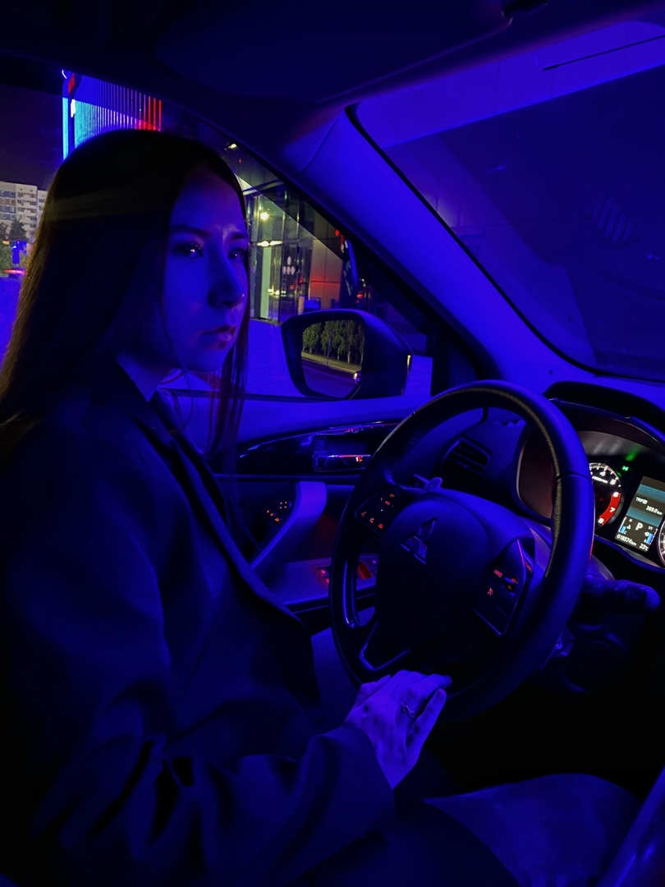

Меня зовут Рената, мне 19 лет. Живу я в Казани, но родилась в другом городе, в Нижнекамске. Я переехала в Казань для получения образования. На данный момент я обучаюсь в Казанском Технологическом колледже «КНИТУ» на факультете «Информационные системы программирования». Я среднего роста, стройная. У меня длинные темно-русые волосы и серо-зелено- голубые глаза.
Я бы назвала свой характер тяжелым и задумчивым. Я отношусь к такому темпераменту как холерик.
Что мне нравится в моем характере:
Что мне не нравится в моем характере:
Мои интересы и хобби совпадают. Я настолько прониклась в программирование, что я могу сесть за изучением материала и выполнением заданий, и не замечаю, как время пролетает быстро, хотя для меня как будто бы прошел час всего лишь. Так что самый главный интерес и хобби у меня программирование. Я считаю у человека должно быть хотя бы два хобби, первый – это чем ты будешь зарабатывать, второй – это тем, чем будешь отвлекаться от работы и первого хобби, чтобы не произошло выгорание, так что и у меня есть еще другие увлечения. Я люблю читать книги про психологию, я люблю изучать себя, погружаться в себя, анализировать свои действия, контролировать себя и пытаться стать лучше. Так же я люблю заниматься физической культурой, это помогает держать себя в тонусе и разминать свои мышцы от протяжного обучения в сидячем виде. Люблю вставать рано утром, когда мало людей и бегать по городу, энергии хватает на весь день.
Я пока что не определилась в какую область программирования уходить, но я точно знаю, что хочу стать востребованным программистом-разработчиком